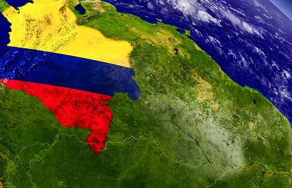

COLOMBIA

Colombia se consolida en este 2026 como una nación de contrastes y dinamismo, donde el progreso no se concentra en un solo punto, sino que se distribuye a lo largo de su variada geografía. Desde la imponente Sabana de Bogotá, donde se trazan las políticas y el rumbo financiero del país, hasta la innovadora Medellín, que lidera la revolución tecnológica y urbana desde las montañas de Antioquia, el país demuestra su capacidad de resiliencia y evolución.Hacia el occidente, Cali se levanta como la capital cultural y el eje logístico que conecta a Colombia con el Pacífico, mientras que en el norte, Barranquilla se proyecta hacia el mundo como la "Puerta de Oro", transformando la brisa del Caribe en energía y desarrollo portuario. A este engranaje vital se suma Bucaramanga, la "Ciudad de los Parques", que desde el oriente colombiano aporta su solidez educativa, su empuje empresarial y una calidad de vida que la sitúa como el referente de sostenibilidad y orden en el país. En esta sección, exploramos la actualidad de una Colombia que camina hacia la digitalización y la sostenibilidad, impulsada por la identidad única de sus cinco grandes capitales, cada una aportando un color diferente a la bandera de nuestro progreso nacional.
Universidad Libre
Facultad de Ingeneria
2026 Valery Diaz. Todos los derechos son reservados